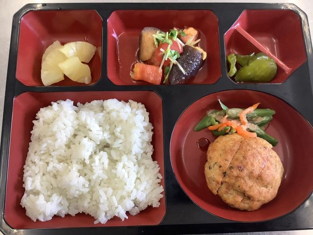
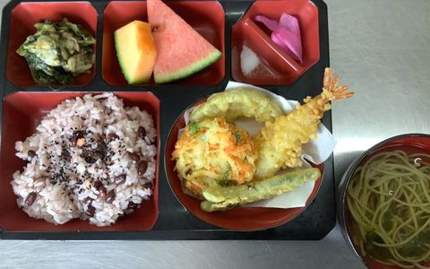

毎日の食事を、施設の中でつくる。
株式会社JINfoodsは、大分県内の高齢者施設・病院の厨房業務を受託し、施設の中で毎日の食事を調製・提供しています。

数字で見るJINfoods
稼働時間 6:00〜19:00 定休日なし
-
受託施設
8施設
6契約先（うち病院1・40床）
-
スタッフ
50名
パート・アルバイトを含む
-
有資格者
栄養士・管理栄養士・調理師
在籍しています
受託施設一覧
大分市・豊後大野市・別府市の施設で、毎日の食事を提供しています。
はんだの郷
- 所在地
- 大分市判田
- 種別
- 高齢者施設
えがおの丘 いぬかい
- 所在地
- 豊後大野市犬飼
- 種別
- 高齢者施設
心笑花
- 所在地
- 大分市野津原
- 種別
- 高齢者施設
とまと／とまと2／特別養護老人ホーム とまとの里
- 所在地
- 大分市大在
- 種別
- 高齢者施設
清瀬病院
- 所在地
- 別府市野口中町
- 種別
- 病院・40床
施設名を押すと、所在地と種別が出ます
ほかに風の丘（大分市美し野）
※「とまと」「とまと2」「とまとの里」は同一契約先の3施設です。6契約先・8施設で稼働しています。
JINfoodsの4つの強み
01
介護食・ムース食に対応
噛む力・飲み込む力は、利用者さまお一人ごとに違います。同じ献立を、状態に合わせて5段階の形態でご用意します。施設によってはムース食もご相談いただけます。
5段階の食事形態を見る- 常食 通常の形態のまま提供します。
- 一口大 ひと口で食べられる大きさに切り分けます。
- 粗刻み 噛みやすいよう粗く刻みます。
- 極刻み さらに細かく刻み、まとまりを持たせます。
- ミキサー なめらかなペースト状にします。
-
イメージ
02
管理栄養士による
献立設計 栄養バランスを計算して毎月の献立を組み立て、提供前には管理栄養士が検食して味と形態を確認しています。施設ごとのご要望や利用者さまの状態に合わせて調整します。
施設に入る体制を見る -

03
毎月の行事食
季節や行事に合わせた彩り豊かな献立を、毎月ご用意しています。食べる楽しみが、毎日の張り合いにつながります。
食事ギャラリーを見る -
イメージ
04
地域に根ざした
きめ細かな対応 大分市・豊後大野市・別府市の施設に密着しています。距離が近いからこそ、急なご相談にも柔軟にお応えできます。
拠点と受託エリアを見る
食事ギャラリー
施設で提供している毎日の食事と、季節の行事食をご紹介します。
調理スタッフ・調理補助を
募集しています
- 6:00〜19:00の間でシフト応相談
- 正社員／パート・アルバイト
- 週末のみ・平日のみの勤務も歓迎
- 未経験・学生の方も歓迎／資格保有者は優遇
- 交通費手当・資格手当あり
お食事サービスの導入・見直しを
ご検討の担当者さまへ
試食のご依頼、サービスに関するご相談、お見積りなど、お気軽にお問い合わせください。担当者が迅速に対応いたします。